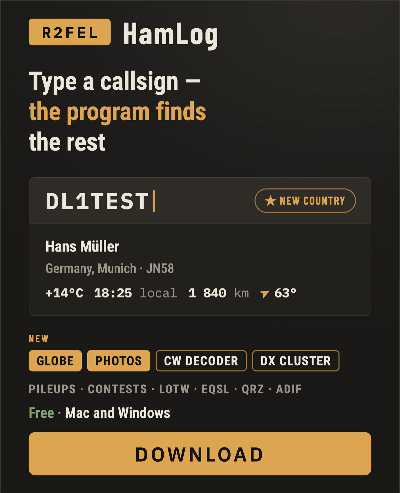
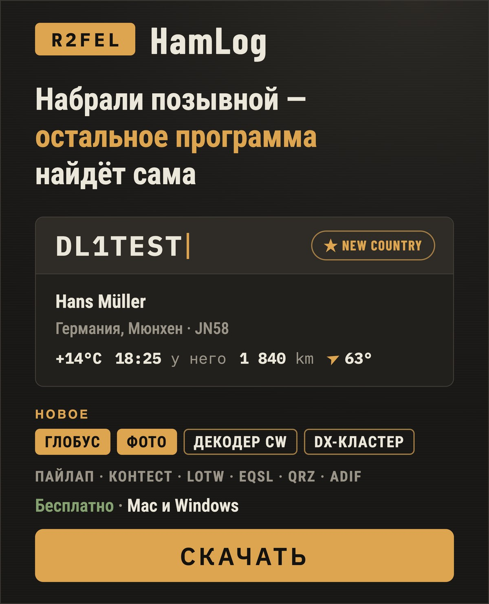
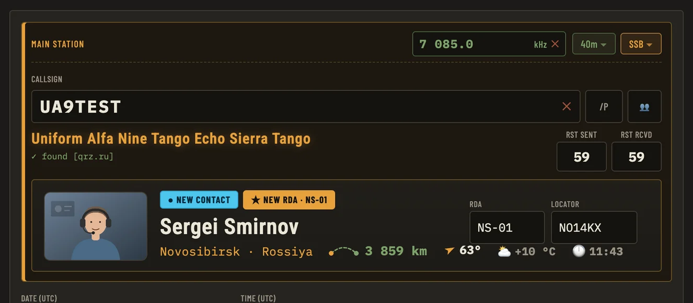
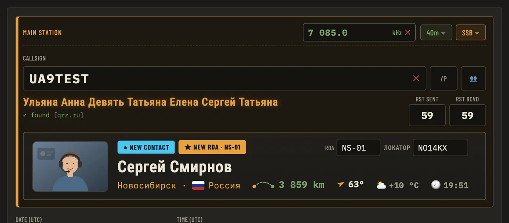
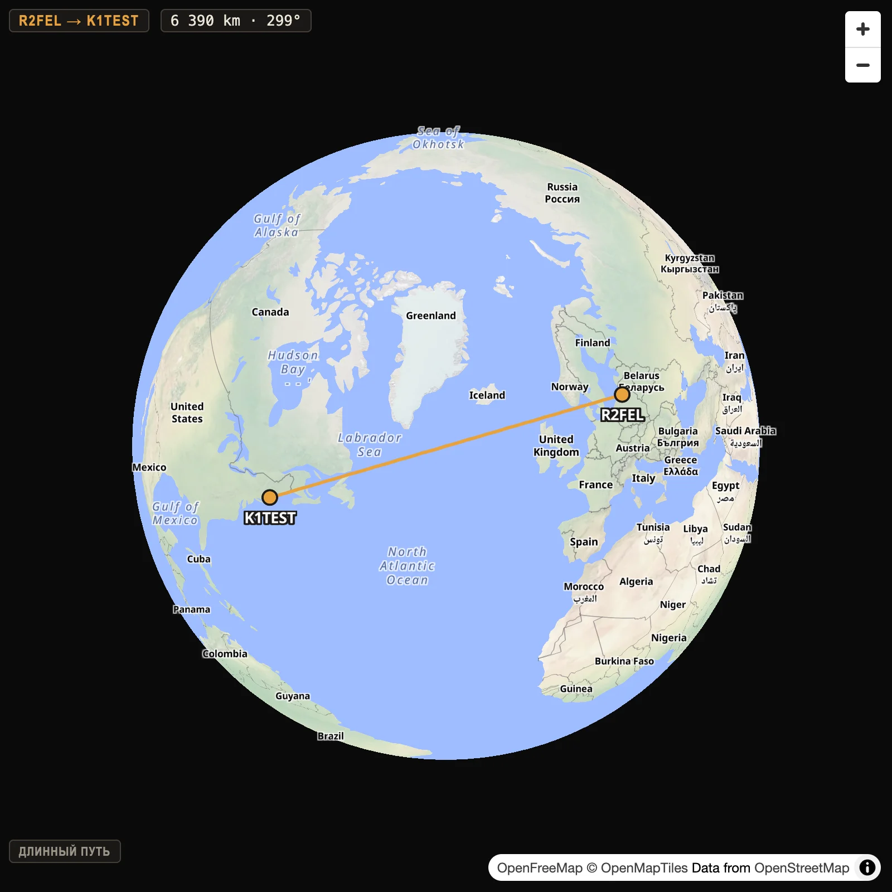

Free ham radio logbook · macOS & WindowsБесплатный аппаратный журнал · Mac и Windows
The ham radio logbook
that does the work
for youЖурнал радиосвязей,
который работает
за вас
The name, country, town, grid square and RDA district fill in by themselves. You see the distance, the weather and the local time at the other end, and at once whether you've worked them before. Имя, страна, город, локатор и район RDA подставляются сами. Видно расстояние, погоду и который час у корреспондента, и сразу понятно, работали вы с ним раньше или нет.
No subscription, no cloud: your log stays on your own computer. Без подписок и без облака: журнал лежит на вашем компьютере.





6 390 km · 299°- Its own windowОтдельное окноIt opens beside the program, not inside it — put it on a second screen.Открывается рядом с программой, а не внутри неё — можно вынести на второй монитор.
- Always on top of the programВсегда поверх программыIt stays above the logbook, never above other apps.Держится поверх журнала, но не поверх чужих программ.
- Grows as you stretch itРастёт вместе с окномStretch the window and the globe grows with it.Растянули окно — вместе с ним растёт и глобус.
- Short and long pathКороткий и длинный путьThe great-circle arc, the distance and the heading — one press for the long way round.Дуга большого круга, расстояние и азимут — одним нажатием и длинный путь.
What it doesЧто умеет
A globe in its own windowГлобус в отдельном окнеnewновое
Both stations, the arc between them, distance and bearing. The window stays above the program, turns to the contact by itself, grows with you when you stretch it, and has + and − buttons. Off until you turn it on.Обе станции, дуга между ними, расстояние и азимут. Окно всегда поверх программы, само поворачивается к связи, растёт вместе с вами, когда вы его растягиваете, и у него есть кнопки + и −. Включается только по вашему желанию.
The other station's photoФото корреспондентаnewновое
The callbook's photos beside the name — several, with arrows and a bigger view — fetched ahead in the background for the callsigns in your log, so they are there the moment you work that station again. Kept in a folder you choose.Фото из справочника рядом с именем — несколько, со стрелками и крупным просмотром — скачиваются заранее, в фоне, для позывных вашего журнала, и при следующей связи уже на месте. Хранятся в папке, которую вы выбираете.
Colour marks, as in JTDXЦветные метки, как в JTDXnewновое
Type a callsign and the mark under it says at once: new callsign — blue; known, but on a new band — lime; new country — emerald; known country on a new band — pink; already worked on this band — plain.Набрали позывной — метка под ним сразу говорит: новый позывной — голубая; известный, но на новом диапазоне — салатовая; новая страна — изумрудная; известная страна на новом диапазоне — розовая; уже работали на этом диапазоне — без подсветки.
A file for QRZ.comФайл для QRZ.comnewновое
The contacts you haven't sent yet, as one file to upload on qrz.com (Logbook → Import) — no subscription needed. Sent ones get the Q mark.Связи, которые вы ещё не отправляли, — одним файлом для загрузки на qrz.com (Logbook → Import), подписка не нужна. У отправленных появляется отметка Q.
One log on several computersОдин журнал на нескольких компьютерахnewновое
Sync through a folder your cloud keeps in step — iCloud Drive, OneDrive, Yandex Disk, Dropbox — or by a file. Nothing is deleted without asking. A settings backup brings a new computer to life in a minute.Синхронизация через папку, которую держит ваше облако, — iCloud Drive, OneDrive, Яндекс.Диск, Dropbox, — или через файл. Ничего не удаляется без вопроса. Копия настроек поднимает новый компьютер за минуту.
The sun and the bandsСолнце и прохождениеnewновое
K, A and SFI in the header, and a window that says in plain words which bands are open right now: green — far stations can be heard, red — almost silence. The same colours show as dots in the band list. Refreshed every hour.В шапке K, A и SFI, а в окне простыми словами сказано, какие диапазоны открыты прямо сейчас: зелёный — слышно далеко, красный — почти тишина. Те же цвета — точками в списке диапазонов. Обновляется каждый час.
What to say on airЧто сказать в эфиреnewновое
Ready words for a general call — your callsign spelled out, the band in words, for POTA with your park — and a typical contact in five steps, from the call to goodbye, with what you say set apart from what they answer. Press 📍 and the parks nearest to you are offered.Готовые слова общего вызова — ваш позывной по буквам, диапазон словами, а для POTA ещё и ваш парк — и типовой разговор в пять шагов, от вызова до прощания: то, что говорите вы, выделено, ответы корреспондента отдельно. Нажали 📍 — программа предлагает ближайшие парки.
Morse (CW) decoderДекодер телеграфаnewновое
Listens to the microphone or a cable from the receiver and writes the letters. Finds the speed itself, tells two stations apart, lights up callsigns and explains PSE, QTH, 73 under the words.Слушает микрофон или кабель от приёмника и пишет буквами. Скорость находит сам, различает две станции, подсвечивает позывные и под словами объясняет PSE, QTH, 73.
DX cluster built inDX-кластер внутриnewновое
28 nodes ready to pick. Click a spot and the callsign and frequency are in the form with the band set — each marked NEW or WORKED ×N from your own log.28 узлов на выбор. Щёлкнули по споту — позывной и частота уже в форме, диапазон выставлен, и у каждого отметка NEW или WORKED ×N по вашему журналу.
Full screen, three themesВесь экран и три темыnewновое
On a big screen the log stands in a tall column on the right while the form stays put. Amber, grey or soft light — and the program remembers the window, the borders, everything.На большом экране журнал встаёт высокой колонкой справа, а форма остаётся на месте. Янтарная, серая или мягкая светлая — и программа помнит окно, границы, всё.
A log that fits youЖурнал под себяnewновое
Choose the columns, sort by any of them, search that forgives the wrong keyboard layout. Tens of thousands of contacts without a stutter.Колонки выбираются, сортировка по любой, поиск прощает не ту раскладку. Десятки тысяч связей без задержек.
award.srr.ru and RDAaward.srr.ru и RDAnewновое
Send the log to award.srr.ru with your key, choosing which of your callsigns goes; get a ready file for the RDA award.Отправка журнала на award.srr.ru по вашему ключу, с выбором позывного; готовый файл для диплома RDA.
Type it your wayВводите как удобноnewновое
Frequency as 14.2, 14200 or 14 200.5 — the band follows. DIGITAL reports as signal-to-noise (−14, +09). POTA park fields when you want them.Частота как 14.2, 14200 или 14 200.5 — диапазон подставится сам. Рапорты DIGITAL — сигнал/шум (−14, +09). Парки POTA — когда нужны.
Three callbooks at onceТри справочника сразу
QRZ.RU and HamQTH are asked together; QRZ.com fills in whatever neither knew. Russian stations come back with names in Russian.QRZ.RU и HamQTH спрашиваются одновременно, чего нет у них — дописывает QRZ.com. Имена российских станций — по-русски.
Weather, time and bearingПогода, время и азимут
At the other end of the contact, plus the great-circle distance and an arrow to point the antenna by. The local time is worked out in the program itself, wherever you are; the weather has more than one source.У корреспондента, плюс расстояние по дуге большого круга и стрелка, куда поворачивать антенну. Местное время считает сама программа, где бы вы ни были; у погоды несколько источников.
Duplicates at a glanceПовторы видны сразу
WORKED BEFORE with every earlier contact one click away; ★ NEW COUNTRY / RDA / BAND for firsts.WORKED BEFORE и все прошлые связи по щелчку; ★ NEW COUNTRY / RDA / BAND — когда впервые.
Pileups and contestsПайлапы и контесты
Several stations in one entry — callsign, space, next callsign. Serial numbers and Cabrillo export.Несколько станций в одной записи — позывной, пробел, следующий. Серийные номера и экспорт Cabrillo.
QSL in one placeQSL в одном месте
LoTW (through TQSL), eQSL with the cards you receive, HAMLOG, and your own QSL card by e-mail.LoTW (через TQSL), eQSL с картинками, HAMLOG и своя QSL-карточка по e-mail.
ADIF, backups, manualADIF, копии, инструкция
Import and export, an automatic copy of the log, phonetics under every field and a two-language manual (F1).Импорт и экспорт, автоматическая копия журнала, фонетика под полями и инструкция на двух языках (F1).
VideoВидео
The videos are in Russian — turn on subtitles (CC) and pick Auto-translate in the player’s settings.
Getting startedПервые шаги
Callsign lookupПоиск позывных
Needs free XML API access at QRZ.RU and/or a free HamQTH account. The manual inside the program (F1) explains how to get both.Нужен бесплатный доступ к XML API QRZ.RU и/или бесплатный аккаунт HamQTH. Как их получить — в инструкции внутри программы (F1).
Thank you, testersСпасибо тестировщикам
Thank you,
testersСпасибо,
тестировщики
Every build installed, logs and bugs sent — the program is better for it.Каждую сборку поставили, журналы и ошибки прислали — программа стала лучше.
R2FEL HamLog grew out of other hams' real logs and honest bug reports. These people installed every unfinished build, sent their logs and debug files, and said plainly what did not work.R2FEL HamLog вырос из настоящих журналов радиолюбителей и честных сообщений об ошибках. Эти люди ставили каждую недоделанную сборку, присылали журналы и файлы отладки и прямо говорили, что не работает.
Your dataВаши данные
Nothing from your log leaves your computerНичего из журнала не уходит с компьютера
Callbooks and weather are asked only while you type a callsign (the sun and band data once an hour, with a request that is the same for everyone). LoTW, eQSL, HAMLOG and award.srr.ru — only when you press the button; the DX cluster only when you press Connect (the node you pick sees your callsign, which is how clusters sign you in). The nearest POTA parks are asked from pota.app only when you press 📍 with the park fields on — your coordinates go with that request. Photos of stations are downloaded from the same callbooks, and a background run asks them, one callsign at a time, about the callsigns in your log. The globe is off by default; its map comes from OpenFreeMap, which sees which areas of the world are shown — no callsigns, no log. The microphone of the Morse decoder is yours alone — the sound never leaves the program. The settings backup, if you turn it on, lands in the folder you choose; its logins are plain text, so keep it off a cloud folder or switch them off. Once a day the program checks for a new version and tells the author just the country, version, system and language — no callsign, no contacts. You can switch that off in settings. This site counts visits the same way — the day, the country, where you came from — with no cookies and nothing about you personally.Справочники и погода спрашиваются, только пока вы вводите позывной (данные о Солнце и прохождении — раз в час, запросом, одинаковым для всех). LoTW, eQSL, HAMLOG и award.srr.ru — только по нажатию кнопки; DX-кластер — только по кнопке Connect (узел, который вы выбрали, видит ваш позывной — так кластеры вас впускают). Ближайшие парки POTA запрашиваются с pota.app только по нажатию 📍 при включённых полях парков — с запросом уходят ваши координаты. Фото станций скачиваются с тех же справочников, а фоновый обход спрашивает у них, по одному позывному за раз, позывные вашего журнала. Глобус по умолчанию выключен; карта берётся с OpenFreeMap, который видит, какие места мира показаны, — ни позывных, ни журнала. Микрофон декодера телеграфа принадлежит только вам — звук из программы не уходит. Копия настроек, если вы её включили, ложится в выбранную вами папку; логины в ней открытым текстом, поэтому не кладите её в облачную папку или выключите логины. Раз в сутки программа проверяет, не вышла ли новая версия, и сообщает автору только страну, версию, систему и язык — ни позывного, ни связей. Это выключается в настройках. Сам сайт считает посещения так же обезличенно: день, страна, откуда пришли, — без cookie и без чего-либо о вас лично.